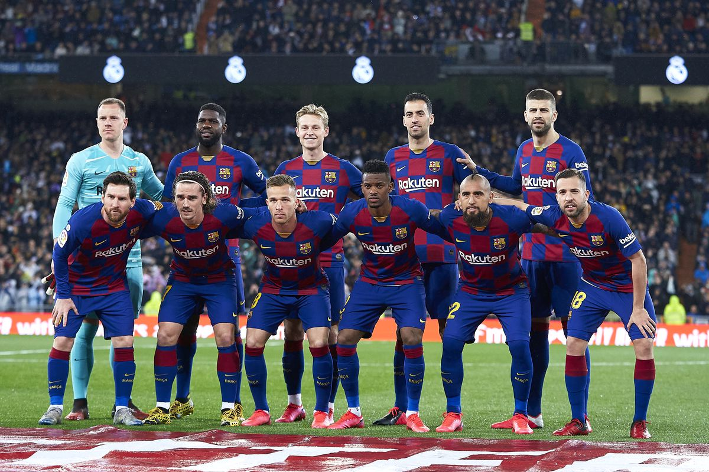
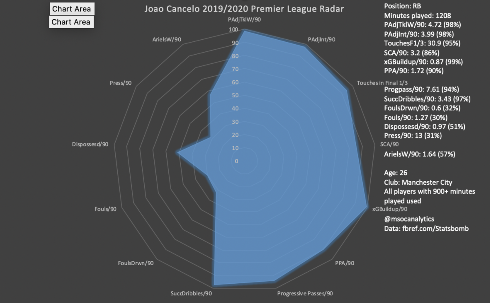

As Gerrard Pique said after his club’s 8-2 loss to Bayern Munich in the Champions League quarterfinals, Barcelona have hit “rock bottom”. The Catalan club has gone trophyless for the first time since the 2013-2014 season, and the future isn’t looking too bright for the five-time European Champions. The club’s reliance on Lionel Messi cannot be overstated, and he is the only reason Barcelona grabbed a top-four spot in La Liga and made it to the Champions League quarterfinals. He has contributed an astounding 31 goals and 26 assists this season in 44 appearances, which are absolutely insane numbers for a 33 year old.
Another major issue that Barcelona faces is the lack of direction from their board of directors. For the past few years, the board has had a “galactico-esque” transfer policy, where they buy high-performing players for well above what they’re worth without consulting the current manager, who is left to fit the players into their squad. A prime example is Antione Griezmann, who has been forced to play on the left-wing this season, a position he is completely unfamiliar with. The board decided to buy Griezmann because of the weight his name carries in the football world, and because they believed that signing a big name striker would automatically equate to the team scoring more goals. Sadly, this was not true, and Griezmann only scored 9 La Liga goals in the 2019/2020 season, a poor tally for a player of his standards. Whether this is because he was playing out of position in a system that didn’t favor him, or he was destined to fail in any system that wasn’t Diego Simeone’s Atletico Madrid, it doesn’t matter. Barcelona’s board flushed away €110 million for a player who they are already trying to force out after only one year at the club.
The board is attempting to set up a situation of “the last stand,” where Lionel Messi and his band of superstars set out to win one final Champions League trophy. That’s why they traded Arthur for Miralem Pjanic, Arthur has more potential and will become a great player, but Pjanic is the better player at the present time. The Barcelona board wants to surround Messi with the best players possible, in the hopes that they can win their first Champions League since 2015. Following this policy, they have put more emphasis on buying talent as opposed to cultivating it in their famous La Masia academy, which has severely hurt the club.
At this time, 6 of Barcelona’s starting eleven are over 30 years old, and they have no replacements lined up for any of them. Much like their reliance on Messi, their reliance on their core group of starters has been immense. Soon enough, all of their aging players will have to leave the club, whether through a transfer due to a dip in quality or through retirement. When that time comes, Barcelona will have to go through a full squad overhaul, which, if done incorrectly, could ruin the club.
The Squad:

Goalkeepers: ter Stegen, Neto, Pena
Defenders: Pique, Lenglet, Umtiti, Todibo, Alba, Firpo, Roberto, Semedo, Wague
Midfielders: Busquets, de Jong, Puig, Rakitic, Alena, Vidal, Coutinho, Pjanic
Forwards: Messi, Dembele, Trincao, Griezmann, Suarez, Braithwaite, Fati, Pedri
Who’s Getting Sold:
There were only six players that I wasn’t open to selling on Barcelona’s current squad: ter Stegen, Lenglet, de Jong, Puig, Pjanic (as he was just brought in), Trincao, and Fati. Everyone else was on the chopping block, and it just came down to what I thought was best.
Neto: Sold to Chelsea for €15 million
-Has been disappointing, and there is no reason to keep him around now that Pena is back from his loan.
Nelson Semedo: Traded to Manchester City in player swap deal
-Never really fit in at Barcelona, a move to Manchester City will be good for both parties.
Gerard Pique: Sold to Napoli for €20 million
-He’s gotten slow in his age, and it is time for the veteran center back to go. Barcelona rely too much on him in the back, and that will begin to cost them as he continues to decline. Give him a good sending off and let him keep his dignity.
Samuel Umtiti: Sold to Roma for €30 million
-He’s too injury-prone for Barcelona, and they should cash in on him while he’s still worth something.
Junior Firpo: Sold to Chelsea for €20 million
-Like Semedo, never really fit in at Barcelona. Feuding with Messi didn’t help him out either.
Ivan Rakitic: Sold to AC Milan for €15 million
-It’s time to go for the Croatian. He’s too old to still be playing top-level football as a starter week in and week out and has already begun his decline.
Arturo Vidal: Sold to Crystal Palace for €10 million
-Get him out. A bad locker room presence, and a thug on the field.
Ousmane Dembele: Sold to Manchester United for €70 million
-I would take anything over €60 million for him. He has suffered greatly due to injuries, and that’s not something I want to have to worry about. Cash in on him while someone still wants him.
Luis Suarez: Sold to Ajax for €25 million
-A great player, but it’s time to go. Let him make a sensational return to Ajax with his head held high.
Martin Braithwaite: Sold to West Ham for €15 million
-I understand why Barcelona signed him last season (even though I don’t like it because it pretty much relegated Leganes), but he isn’t Barcelona quality. I saw he was linked with West Ham, and I couldn’t think of a more “classic West Ham” transfer than Martin Braithwaite.
Philippe Coutinho: Sold to Liverpool for €55 million
-I honestly have no idea what club will take him, Liverpool is just a guess, but after Coutinho scored 2 goals against Barcelona in the Champions League, I don’t think he’ll be welcome in the squad.
Lionel Messi: Sold to Manchester City in player+cash deal (€40 million)
-Yeah, I would sell Messi. Barcelona’s reliance on him is bad for the club, and it’s time they had a new identity, rather than “Messi’s club.” It’s time to rip off the band-aid and get this over with. If Barcelona are truly rebuilding the club, they shouldn’t continue to rely on Messi post-rebuild. Give him a send-off ceremony worthy of a god, and let him light up the Premier League for the last few years of his career.
Total made: €315 million
Transfer Budget: €415 million
The Squad Now/What We Need:
Goalkeepers: ter Stegen, Pena
Defenders: Lenglet, Todibo, Alba, Roberto, Wague
Midfielders: Busquets, de Jong, Puig, Alena, Pjanic
Forwards: Trincao, Griezmann, Fati, Pedri
First, I don’t believe the squad needs to sign a goalkeeper. I have confidence that Barcelona can find a capable goalkeeper in their academy, who will be suitable as a third-string.
In defense, Barcelona will need two center backs, one starter, and one backup. They also need a new backup left-back, and I’m looking for someone who will be able to take over the starting position when I sell Jordi Alba in the 2021 summer transfer window. The club needs a right-back, which will be taken care of in Nelson Semedo’s swap deal.
In midfield, I will make three signings. The first will be the heir to Sergio Busquets, who will be his understudy for the coming season, and then take over his position eventually (like Jordi Alba, I expect Busquets to leave in the summer 2021 transfer window). I will also buy a left and right midfielder, as the squad will now be playing in a 4-4-2 formation.
In attack, I will buy two strikers. One will be the starter alongside Antoine Griezmann, and the other will be a backup, who will be young with a lot of potential.
The main thing that will be needed from the signings is goals. Messi and Suarez combined for 41 league goals in the 2019/2020 season, almost half of the club’s total (86). The signings that are brought in will have to replicate these extraordinary numbers if Barcelona wants to continue to be a top club, so I tried to pick players that would maximize our goal output.
Signings:
Joao Cancelo from Manchester City for Nelson Semedo
Cancelo’s time at Manchester City hasn’t been a huge success, and he hasn’t been able to steal the starting right-back position from Kyle Walker. As Cancelo is one of the best right-backs in the game, he won’t want to be a backup next season and will look for a team that can guarantee him a starting spot. Barcelona can offer him that, as they will be eager to pick up a right-back of his quality. He is a behemoth both defensively and in attack, as he ranks in the 98th percentile for tackles won and interceptions won, and in the 99th percentile for xGBuildup (expected goals per movement that the player has contributed to) and the 97th percentile for successful dribbles per match. If Barcelona were to sign him, he could become the true successor to legendary right-back Dani Alves.
